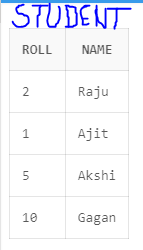
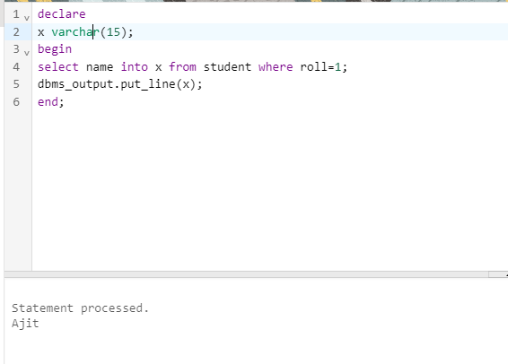

How can we fetch the data from table and store it into variable?
PL/SQL SELECT INTO statement is the simplest and fastest way to fetch a single row from a table into variables. The following illustrates the syntax of the PL/SQL SELECT INTO statement:
Syntax:-
SELECT
select_type
INTO
variable_type
FROM
table_name
[WHERE
condition];
In this syntax, the number of columns in the "variable_type" must be the same as the number of
variables (or the number of components of a record) in the "select_type". In addition, their corresponding data type must be compatible.
Besides the WHERE clause, you can use other clauses in the SELECT statement such as INNER JOIN, GROUP BY, HAVING, and UNION.
~If the SELECT statement returns more than one row, Oracle will raise the "TOO_MANY_ROWS exception".
~If the SELECT statement does not return any row, Oracle will raise the "NO_DATA_FOUND exception."
Output:-

